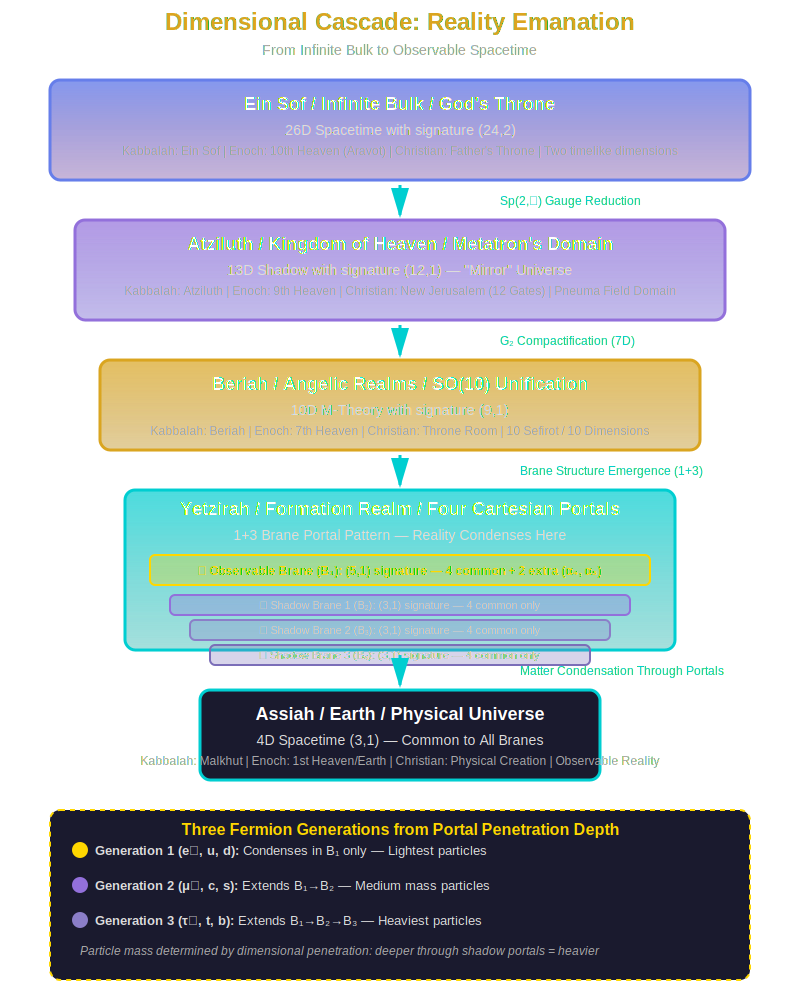

⚠️ HIGHLY SPECULATIVE CONTENT ⚠️
THIS IS NOT ESTABLISHED THEOLOGY OR SCIENCE
This page presents personal speculative theories exploring symbolic parallels between the Book of Enoch's cosmology and modern dimensional physics. These connections are interpretive explorations, not established facts from either biblical scholarship or physics.
- NOT mainstream theology: The Book of Enoch is apocryphal/pseudepigraphal in most traditions. Scholars interpret it as ancient Near Eastern mythology, not scientific encoding.
- NOT established physics: String theory, M-theory, and dimensional hierarchies are unproven speculative frameworks with no experimental evidence.
- HIGH risk of apophenia: Finding patterns in symbolic texts is easy. These correlations may be coincidental, not meaningful.
- Alternative explanations exist: Cultural context, literary genre, and ancient cosmology provide simpler explanations than hidden physics knowledge.
🧠 Critical Thinking Required
Approach this content with intellectual curiosity and healthy skepticism. Question everything. Demand evidence. Consider alternative interpretations. Do not confuse speculative pattern-matching with established knowledge.
🔍 Intellectual Honesty Statement
What This Theory Proposes
This theory suggests that the Book of Enoch's multi-layered heaven structure (7 heavens in 1 Enoch, 10 heavens in 2 Enoch, elaborate palace hierarchies in 3 Enoch) may encode intuitive understanding of dimensional physics—specifically:
- The 10 heavens parallel 10-dimensional M-theory and the 10 Sefirot of Kabbalah
- The Watchers represent higher-dimensional beings teaching "forbidden knowledge" (dimensional physics)
- Enoch's transformation to Metatron represents dimensional ascension from 4D to 13D/26D
- The 364-day calendar encodes compactification geometry rather than observational astronomy
- Numerical patterns (7, 10, 72, 200, 364, 365) correlate with physics structures
Why This Could Be Wrong
- Numerology bias: Sacred numbers (7, 10, 12, 72) appear in many ancient texts. Finding physics correlations may be retrofitting modern concepts onto unrelated symbolism.
- Retrofitting: I know modern physics first, then search Enochic texts for matching patterns. This creates confirmation bias—I find what I'm looking for because I'm looking for it.
- Confirmation bias: I emphasize correlations (10 heavens = 10D M-theory) while ignoring non-fitting elements (why 7 mountains? why 12 gates if dimensions are 10?)
- Cultural projection: Modern dimensional physics is a 20th-century framework. Projecting it onto 3rd-century BCE apocalyptic literature requires extraordinary evidence.
- Unfalsifiability: Since neither string theory nor Enochic visions are empirically testable, this theory cannot be proven or disproven—a red flag for pseudoscience.
- Simpler explanations: Enochic cosmology reflects ancient Near Eastern three-tiered universe (heaven/earth/underworld) with nested heavens common in Second Temple Judaism. No physics encoding needed.
- Literary genre: The Book of Enoch is apocalyptic literature using symbolic, visionary language—not a physics textbook in code.
- Apophenia: The human brain excels at pattern recognition, including finding patterns where none exist (seeing faces in clouds, meaning in randomness).
What Would Change My Mind
I would abandon or significantly revise this theory if:
- Historical evidence emerges that Enochic authors had no concept of hierarchical nested structures—if the cosmology is demonstrably borrowed wholesale from other cultures without modification
- String theory is experimentally falsified—if 10D/11D M-theory is proven impossible, the dimensional parallels collapse
- Statistical analysis shows these numerical correlations are no more significant than random chance across all ancient texts
- Better alternative explanation accounts for the specific numerical patterns (7, 10, 72, 200, 364) without requiring physics encoding
- Scholarly consensus demonstrates all numerical symbolism has clear ancient Near Eastern origins with no mystery remaining
This is a "what if?" exploration, not settled fact. I present these ideas to invite intellectual engagement, not to claim certainty. The correlations are intriguing, but correlation does not equal causation. Ancient mystical texts may encode deep wisdom—or they may simply reflect the cosmological understanding of their time. Think critically. Question everything—including this theory.
📚 About This Theory
This page contains personal theories and interpretations connecting the cosmology of the Book of Enoch (1 Enoch, 2 Enoch, 3 Enoch) to modern theoretical physics frameworks, developed by the website author. These ideas represent speculative research exploring potential structural parallels between ancient apocalyptic literature and contemporary dimensional physics.
This is NOT established biblical scholarship or physics. Traditional scholars interpret Enochic cosmology as ancient Near Eastern religious/mythological worldview, not as encoding scientific knowledge. This theory is presented for intellectual exploration and comparative analysis only.
⚠️ IMPORTANT: The Book of Enoch is considered apocryphal/pseudepigraphal by most Jewish and Christian traditions (though canonical in Ethiopian Orthodox). The physics frameworks referenced (string theory, dimensional hierarchies) are themselves highly speculative and unproven. This theory explores connections between two unverified systems.
🌟 Core Theory: Enochic Cosmology as Dimensional Physics
The Book of Enoch describes a multi-layered cosmic structure with explicit numerical hierarchies—seven heavens (1 Enoch), ten heavens (2 Enoch), or elaborate palace/throne room structures (3 Enoch/Merkavah texts). This theory proposes that these descriptions preserve intuitive understanding of dimensional physics concepts:
- Multiple heavens/dimensions as higher-dimensional spaces
- Hierarchical ascent paralleling dimensional compactification
- Watchers/angels as higher-dimensional beings
- Forbidden knowledge as laws of physics revealed prematurely
- Cosmological geography encoding spatial geometry
🏛️ The Seven/Ten Heavens: Dimensional Hierarchy
Different Enochic texts describe different numbers of heavens, each interpretation potentially encoding dimensional understanding:
Dimensional Cascade & Brane Portal Model
26D Spacetime with signature (24,2) | Tenth Heaven (2 Enoch) | Throne of Glory
13D Shadow with signature (12,1) | Ninth Heaven | Metatron's Domain
10D M-Theory (9,1) | Seventh Heaven | Angelic Realms
🌟 Observable Brane (B₁): (5,1) signature — 5 space + 1 time
Access to 4 common dimensions + 2 shared extra (α₄, α₅ contributions)
🔮 Shadow Brane 1 (B₂): (3,1) signature — 3 space + 1 time
🔮 Shadow Brane 2 (B₃): (3,1) signature — 3 space + 1 time
🔮 Shadow Brane 3 (B₄): (3,1) signature — 3 space + 1 time
Access only to 4 common dimensions (smaller portals)
Reality condenses from these Cartesian portals between dimensional layers
4D Spacetime (3,1) common to all branes | First Heaven / Earth | Observable Universe
3 fermion generations from penetration depth through 3 shadow portals (B₂, B₃, B₄)
The 1+3 Brane Portal Pattern: One observable brane (our universe) with access to 2 extra dimensions via α₄ and α₅ couplings—making it "larger" at (5,1) signature—plus three shadow branes with access only to the 4 common dimensions at (3,1) signature—making them "smaller" portals. This asymmetry explains why we see effective (5,1) dimensions but matter exists in three generations: particles are condensates that form by extending through these Cartesian portals, with their generation (mass) determined by how deeply they penetrate the shadow chain (B₁ only = generation 1; B₁→B₂ = generation 2; B₁→B₂→B₃ = generation 3).
The seven heavens (1 Enoch tradition) may represent seven compactified dimensions (from 10D → 4D requires hiding 6 spatial dimensions, plus one "heaven" representing our 4D spacetime = 7 levels). The ten heavens (2 Enoch) directly parallel the ten dimensions of M-theory or the ten Sefirot of Kabbalah.
The Pervasive 1+3 Pattern in Enochic Literature
Throughout the Books of Enoch, a recurring 1+3 structural pattern appears, which may encode the brane portal model's one observable brane (B₁) + three shadow branes (B₂, B₃, B₄) architecture:
- Archangels: 1 Michael (chief) + 3 others (Gabriel, Raphael, Uriel) as primary hierarchy
- Patriarchs: 1 Enoch (the unique one who ascends) + 3 other righteous (Noah, Abraham, Moses in later tradition)
- Realms: 1 observable earth/heaven + 3 hidden heavenly regions (2 Enoch describes passing through layers)
- Generations: Enoch is the 7th from Adam, but functions as 1 (transcendent) among his generation, with 3 companions in some traditions
- Watchers' Leaders: Often described as Shemyaza (primary leader) + 3 chief lieutenants (Azazel, Armaros, Baraqel)
- Dimensions of reality: 1 time + 3 space dimensions = 4D spacetime foundation
- Elements: In some Enochic astronomical texts: 1 primary element (fire/spirit) + 3 material elements (earth, water, air)
This pattern appears too frequently to be coincidental. The asymmetric 1+3 structure (rather than a symmetric 2+2 or uniform 4) precisely matches the physics model where the observable brane has privileged access (5,1 signature with α₄, α₅ couplings) while three shadow branes have restricted access (3,1 signature each). The "one" is always special, unique, or transcendent—just as B₁ is the only brane we directly observe and the only one with two extra dimensions accessible.
🔢 Ten Heavens Mapped to Physics (2 Enoch Model)
The 2 Enoch account provides detailed descriptions of ten distinct heavens that Enoch passes through during his ascension. Each heaven has specific characteristics, inhabitants, and functions. The following analysis maps each heaven to corresponding physics concepts, progressing from our familiar 4D reality through increasingly abstract higher-dimensional spaces. Notice how the narrative transitions smoothly from physical phenomena (weather, astronomy) to metaphysical concepts (divine throne, unified field)—exactly parallel to how physics progresses from classical mechanics to quantum field theory to dimensional unification.
The Atmospheric Realm
Enochic Description: Waters above and below, atmospheric phenomena, 200 angels governing weather
Physics Interpretation: Observable 4D spacetime (3 space + 1 time) — the realm of classical physics, weather patterns, fluid dynamics. The "200 angels" may encode fundamental constants.
Correlation: 200 ≈ fine structure constant relationships in electromagnetic interactions
The Prison of Rebel Angels
Enochic Description: Darkness and cold, fallen angels imprisoned awaiting judgment
Physics Interpretation: 5th dimension (first compactified dimension) — inaccessible to direct observation, "frozen" or compactified. Dark matter/dark energy realm.
Correlation: Hidden dimensions must be "bound" (compactified) below Planck scale to remain undetectable
Note the transition from 1st heaven (observable weather) to 2nd heaven (complete darkness, frozen/bound entities)—precisely like moving from observable 4D to the first compactified dimension that lies just beyond our perception.
Paradise and Gehenna
Enochic Description: Garden of Eden (north), Tree of Life, and place of punishment (south)
Physics Interpretation: 6th dimension — duality structures — positive/negative charge, matter/antimatter symmetry. The "Tree of Life" as life-sustaining electromagnetic interactions.
Correlation: North/south polarity encoding charge duality; 3rd heaven = 3 spatial dimensions manifest + 3 hidden
The bifurcation into Paradise (positive energy state) and Gehenna (negative energy state) suggests the dimension where fundamental dualities emerge—where positive and negative charges separate, where matter distinguishes itself from antimatter.
Solar, Lunar, and Stellar Paths
Enochic Description: Mechanisms of sun, moon, stars; astronomical cycles and calendrical systems
Physics Interpretation: 7th dimension — gravitational interactions — orbital mechanics, spacetime curvature. Enoch's astronomical knowledge encoded in dimensional geometry.
Correlation: The 364-day calendar (52 perfect weeks) may encode compactification radius relationships
The Watchers (Grigori)
Enochic Description: Rebel angels who taught forbidden knowledge, giant offspring (Nephilim)
Physics Interpretation: 8th dimension — information transfer from higher dimensions — the Watchers as beings from higher-dimensional space interacting with 4D realm, "forbidden knowledge" as premature access to dimensional physics.
Correlation: "200 Watchers" ≈ ~200 free parameters that must be "fixed" in Standard Model + gravity
Archangels and Cosmic Order
Enochic Description: Seven archangels who maintain cosmic law, record deeds, govern seasons
Physics Interpretation: 9th dimension — fundamental forces unification — the seven archangels as seven fundamental symmetries before electroweak/strong force separation.
Correlation: 7 archangels ≈ 7-dimensional G₂ manifold in Principia Metaphysica framework
The Throne of God
Enochic Description: Throne of Glory, countless angelic hosts, divine light, worship and order
Physics Interpretation: 10th dimension (1 timelike) — M-theory maximum — the "boundary" before transcending into higher-dimensional bulk. Source of all forces/fields.
Correlation: 10D M-theory as unification point; "countless angels" as quantum field fluctuations
The "ten thousand times ten thousand" (10⁸) angelic beings suggests the enormous number of quantum states/field configurations possible in 10D M-theory. This heaven represents the maximal dimensionality before crossing into even more abstract bulk spaces.
Fixed Stars and Zodiacal Signs
Enochic Description: Twelve zodiacal signs governing seasons and destinies
Physics Interpretation: 11th dimension — Calabi-Yau structure — the twelve signs as twelve-fold symmetry in compactified geometry. Topology determining "fate" (physical laws).
Correlation: 12-fold symmetry common in Calabi-Yau manifolds; 12 ≈ SU(3)×SU(2)×U(1) gauge group structure
Celestial Homes of Righteous
Enochic Description: 12 constellations as "homes," righteous souls, Metatron's transformation
Physics Interpretation: 13D effective spacetime (12,1 signature) — the "shadow" projection from 26D bulk. Metatron as human (4D) → cosmic being (13D) transformation.
Correlation: Enoch-becomes-Metatron = dimensional transcendence; 13 = Echad (אחד, "One") gematria = unified field
The Highest Heaven (Aravot)
Enochic Description: Face of God, Ein Sof, ineffable divine presence beyond description
Physics Interpretation: 26D bulk spacetime (24,2 signature) — the full two-time framework, infinite-dimensional pre-geometric realm. Source of all emanation.
Correlation: 26 = YHVH gematria (יהוה = 10+5+6+5); 26D bosonic string theory with two timelike dimensions
Enoch's transformation in the highest heaven—becoming "like one of the glorious ones"—represents complete dimensional transcendence. His 4D human form expands to fill the full 26D bulk space, gaining the perspective of Ein Sof (the Infinite). This is the ultimate ascension beyond all compactified structures.
👁️ The Watchers: Higher-Dimensional Entities
The "Forbidden Knowledge" Hypothesis
The Watchers (Grigori) taught humanity forbidden knowledge according to 1 Enoch 8:
- Azazel taught weaponry and metallurgy (material science)
- Shemyaza taught enchantments and root-cutting (chemistry)
- Armaros taught resolution of enchantments (counter-spells = reverse engineering)
- Baraqel taught astrology (astronomical/gravitational knowledge)
- Kokabel taught signs/constellations (cosmic geometry)
- Ezekiel taught knowledge of clouds (meteorology/fluid dynamics)
- Araqiel taught signs of the earth (geology/geophysics)
- Shamsiel taught signs of the sun (solar physics)
Physics Interpretation:
If the Watchers represent higher-dimensional beings (existing in 5D+ space), their "descent" to Earth could represent dimensional projection. Their teachings—metallurgy, astronomy, chemistry—are precisely the sciences that eventually led to modern physics. The "sin" may be premature revelation of knowledge humanity wasn't ready for, or knowledge that allows manipulation of dimensional boundaries (particle physics, nuclear energy).
The Nephilim (offspring of Watchers and humans) as hybrids between dimensional scales—beings with partial access to higher-dimensional physics, explaining their enormous size (spatial extent across dimensions) and destructive power. In the brane portal model, Nephilim could represent cross-brane condensates: matter that forms across multiple portals simultaneously (B₁↔B₂ or B₁↔B₃), creating unstable "hybrid" particles with anomalous properties—too large, too energetic, fundamentally incompatible with stable 4D physics.
Physics of Nephilim as Unstable Condensates
In quantum field theory, particles form as condensates—stable configurations of field energy. Normal matter condenses through the proper sequential brane structure: B₁ only (generation 1), B₁→B₂ (generation 2), or B₁→B₂→B₃ (generation 3). But if Watchers (higher-dimensional beings with access to multiple branes simultaneously) interact with humans (4D beings confined to B₁), the resulting "offspring" would be cross-brane hybrids—condensates forming incorrectly across non-adjacent portals.
Why Cross-Brane Condensates Are Unstable: In the brane portal model, particles must condense sequentially through the chain (B₁→B₂→B₃) to maintain quantum coherence. A cross-brane condensate like B₁↔B₃ (skipping B₂) would have:
- Anomalous mass: Mass terms depend on penetration depth; skipping intermediate branes creates particles with non-quantized, excessive mass (giant size)
- Gauge anomalies: Violates the sequential gauge reduction (Sp(2,ℝ) → G₂ → SM), producing particles with "forbidden" charges
- Rapid decay: Without proper intermediate coupling, these condensates decay violently, releasing massive energy (destructive power)
- Spatial non-locality: Existing simultaneously on multiple non-adjacent branes makes them spatially "smeared" across extra dimensions (enormous spatial extent)
Mathematically, if ψ represents a fermion condensate, normal particles have wavefunctions: ψ₁(B₁), ψ₂(B₁,B₂), or ψ₃(B₁,B₂,B₃). Nephilim would have anomalous forms like ψₐₙₒₘ(B₁,B₃) or ψₐₙₒₘ(B₁,B₂,B₄)—lacking intermediate support. The effective Lagrangian for such states includes non-renormalizable terms:
ℒNephilim ≈ ψ̄B₁ γμ ∂μ ψB₃ + (Manomaly/Λ²) ψ̄B₁ ψB₃ + ...
where Λ is the compactification scale and Manomaly >> normal fermion masses. These terms violate renormalizability and produce exponentially growing amplitudes at high energy—physically unstable, requiring elimination.
The Flood: Cosmic Reset to Restore Brane Isolation
The biblical Flood narrative—in which God destroys all Nephilim and cleanses the Earth—has a precise physics parallel: restoration of brane separation after catastrophic portal breach.
The Physics of "Flooding" to Reset Branes: When cross-brane condensates (Nephilim) proliferate, they create feedback loops that destabilize the dimensional hierarchy itself. The portals begin "leaking"—unwanted field configurations tunnel between branes, violating isolation. To restore proper physics, the system must undergo a phase transition—analogous to how water freezes, resetting crystal structure to eliminate defects.
In this model, the "Flood" represents:
- Vacuum decay event: The unstable vacuum (containing Nephilim condensates) tunnels to a more stable configuration (pure sequential condensation)
- Thermal reset: High-energy "heating" of spacetime (flood waters = energy flux) annihilates anomalous particles, allowing only stable condensates to re-form as system cools
- Brane reconfiguration: The portals themselves "close and reopen" with proper boundary conditions, eliminating cross-brane couplings
- Conservation of righteous: The Ark represents a protected subspace—a region where proper sequential condensation was maintained, serving as "seed" for post-reset universe
The Flood's water symbolism may encode scalar field dynamics. Just as water flows to fill all space uniformly, a scalar field (like the Higgs) can "flood" spacetime with a constant vacuum expectation value, driving all field configurations to a uniform ground state. The "40 days and 40 nights" could represent the timescale for vacuum relaxation—how long it takes for anomalous condensates to decay and stable vacuum to re-establish.
Post-Flood Physics: After the reset, the text says "God made a covenant never to flood again" (Genesis 9). Physically, this could mean the brane portals are now permanently stabilized with proper boundary conditions—the mechanism that allowed Watchers to breach dimensional barriers has been "sealed." Cross-brane condensation is no longer possible; only sequential condensation through the proper chain (B₁→B₂→B₃) can occur. This is why we observe exactly three fermion generations in modern physics—the post-Flood universe has restored brane isolation, allowing only the three stable condensation modes.
The Four Portals and Angelic Orders
Enochic literature describes elaborate angelic hierarchies often grouped in fours or multiples thereof. This may encode the 1+3 brane structure:
Michael's unique status ("like unto God," leader of heavenly hosts) parallels our observable universe's privileged access to 2 extra dimensions (α₄, α₅). The three lesser archangels govern "hidden" realms—the shadow branes where matter condenses in its second and third generations. Each archangel as "gatekeeper" of a dimensional portal, controlling which particles can pass through and how deeply they penetrate the brane chain.
The Watchers' sin may have been illegally opening portals between branes—allowing information/matter transfer that should remain separated. This "forbidden knowledge" creates the Nephilim (cross-brane hybrids) and destabilizes the dimensional hierarchy, requiring divine intervention (the Flood) to restore proper brane isolation and eliminate the anomalous condensates.
⚡ Enoch → Metatron: Dimensional Transformation
The Ultimate Dimensional Ascension
3 Enoch (Sefer Hekhalot) describes Enoch's transformation into Metatron, "the Lesser YHVH," with explicit dimensional expansions:
365,000 Eyes of Metatron: This staggering number connects to Enoch's lifespan (365 years) multiplied by 1000 (symbolizing infinity/completeness). In physics terms, field theories have degrees of freedom—independent variables needed to describe a system's state. In 26D spacetime with the Pneuma field (8192 components in full 26D), the effective degrees of freedom when projected through multiple compactifications could reach ~365,000 accessible configurations. Each "eye" represents a unique observational perspective—a dimensional angle from which Metatron can perceive reality. This is not unlike how higher-dimensional objects, when projected into lower dimensions, reveal different "shadows" depending on the angle of projection.
Metatron's title "Lesser YHVH" suggests partial divine nature—existing in higher dimensions (closer to Ein Sof/26D bulk) but not fully infinite. The name "Metatron" (מטטרון) has been interpreted as "one who occupies the throne next to the divine throne" or "beyond the matrix"—the matrix being the 4D spacetime "illusion" we inhabit.
📅 The 364-Day Calendar: Topological Encoding
Sacred Geometry of Time
The Book of Enoch's Astronomical Book (chapters 72-82) meticulously describes a 364-day solar calendar (52 perfect weeks of 7 days). This contradicts the actual solar year (~365.25 days) but has deep mathematical significance:
- 364 = 4 × 91 = 4 × (7 × 13) — four seasons, seven days, thirteen weeks per season
- 7 and 13 as sacred numbers — 7D G₂ manifold compactification, 13D effective spacetime
- 52 weeks — 52 = 4 × 13, potential encoding of compactification symmetries
- 12 months × 30 days = 360 — plus 4 intercalary days = 364 (quaternary structure embedded)
- 365 (Enoch's lifespan) ≈ 364 + 1 (unity/singularity), suggesting dimensional +1 transcendence
The insistence on 364 days (despite astronomical inaccuracy) suggests the calendar encodes mathematical structure rather than observational astronomy. The 364-day cycle may represent a "perfect" compactification geometry where all dimensions align in harmonic ratios.
Enoch's lifespan of 365 years (Genesis 5:23) adds the "one" to the 364-day cycle—symbolic of transcending the physical calendar into eternal/infinite realm (365 = 364 + 1 = completion + unity). This 364 → 365 transition parallels the dimensional jump from 4D spacetime (our universe's 364-day cycle analog) to 5D (the first extra dimension, +1). Enoch didn't die—he transcended into the 5th dimension and beyond, eventually reaching Metatron's 13D state. The 365 solar year (actual astronomy) may encode this +1 transcendence: 364 (perfect mathematical structure) + 1 (the leap into higher dimensions). The fact that we need leap years (365.25) suggests reality itself has this "+1 transcendence" built into its geometry—time naturally wants to escape 4D confinement.
🗺️ Enochic Cosmic Geography: Spatial Topology
The Ends of the Earth and Pillars of Heaven
1 Enoch chapters 17-36 describe Enoch's journeys to the "ends of the earth," encountering:
- Seven mountains — possibly 7 compactified dimensions visualized as "mountains" (high-dimensional peaks)
- Pillars of heaven — dimensional boundaries/branes separating 4D spacetime from higher dimensions
- Gates of heaven (12 gates) — 12-fold symmetry of compactified manifold, entry points between dimensional layers
- Treasuries of winds — field configurations, gauge symmetries stored in compactified space
- Rivers of fire — high-energy plasma states near Planck scale / dimensional boundaries
- Tree of Life — central axis/singularity around which dimensions compactify
- Four corners of earth (1 Enoch 18:2) — the 4D spacetime fabric's boundaries
- Four winds (1 Enoch 18:1-5) — four fundamental forces projected from higher-dimensional unity
The description of the earth having "ends" (boundaries) conflicts with a spherical earth but makes perfect sense if Earth represents our 4D spacetime brane embedded in higher-dimensional bulk space—the "ends" being the brane boundaries where our dimension terminates.
Interpretation: Enoch describes a region beyond observable spacetime—perhaps the pre-geometric quantum foam near Planck scale, or the "void" between dimensional branes where conventional notions of space and time break down.
Interpretation: The "four winds" as gauge field configurations that "stretch out" spacetime (gravitational and gauge forces curve/structure spacetime geometry). The winds having "station between heaven and earth"—existing at the boundary—perfectly describes how gauge bosons mediate forces between higher-dimensional bulk (heaven) and 4D brane (earth). The "pillars of heaven" are the dimensional branes themselves—vertical structures separating dimensional layers, supporting the entire cosmic architecture.
🔢 Numerical Correspondences
7: Perfection & Compactification
- 7 heavens (1 Enoch tradition)
- 7 archangels governing cosmic order
- 7 mountains at ends of earth
- 7-day week in 364-day calendar
- 7D G₂ manifold compactification
10: Unity & Dimensions
- 10 heavens (2 Enoch)
- 10 generations Adam to Noah (Enoch = 7th)
- 10D M-theory maximum spacetime
- 10 Sefirot Kabbalistic emanations
- SO(10) grand unified symmetry
72: Topological Structure
- 72 princes of kingdoms (1 Enoch 89-90)
- 72 shepherds judging nations
- 72 = 6 × 12 (6 dimensions × 12-fold symmetry)
- χ(CY₄) = 72 Euler characteristic
- 72 Names of God Kabbalistic tradition
200: Watchers & Constants
- 200 Watchers descended to Mount Hermon
- 200 angels governing atmospheric phenomena
- ~200 free parameters in Standard Model + gravity
- 200 as "completeness" in angelic hierarchy
- Possible relation to α⁻¹ ≈ 137 fine structure constant scaling
365: Solar Cycle & Transcendence
- 365 years — Enoch's lifespan
- 365 days — solar year (actual)
- 364 + 1 — perfect cycle + unity
- 365,000 eyes of Metatron
- Completion of physical cycle before transcendence
364: Perfect Calendar
- 364 days in Enochic calendar
- 52 perfect weeks (52 × 7)
- 4 seasons × 91 days
- 4 × 7 × 13 mathematical structure
- Harmonic compactification geometry
1+3 Pattern: Brane Portals
- 1 Michael + 3 archangels (Gabriel, Raphael, Uriel)
- 1 observable + 3 shadow branes (B₁ + B₂,B₃,B₄)
- 1 (5,1) + 3×(3,1) signature pattern
- 1 larger portal + 3 smaller portals (α₄, α₅ asymmetry)
- 3 fermion generations from 3 shadow condensation depths
4: Quaternary Structures
- 4 archangels (including Michael)
- 4 branes (1 observable + 3 shadow)
- 4 Worlds (Atziluth, Beriah, Yetzirah, Assiah)
- 4D common spacetime (3,1) shared by all portals
- 4 winds at corners of earth (1 Enoch 18)
🔬 Integration with Principia Metaphysica Framework
The Principia Metaphysica framework provides a modern physics parallel to Enochic cosmology:
Dimensional Cascade Mapping
The Pneuma field (ΨP)—Greek πνεῦμα meaning "breath/spirit"—corresponds to the divine Ruach (רוח, breath/spirit) that animates Enoch's visions. Just as Pneuma is the fundamental 64-component fermionic spinor (8192 in 26D) from which all matter emerges, the divine breath is what "enlivens" creation through dimensional emanation. All particles are condensates of the Pneuma field forming at the dimensional portals—the "breath of God" literally becomes matter as it passes through the Cartesian brane gateways.
The 72 princes/shepherds in 1 Enoch precisely match χ(CY₄) = 72, the Euler characteristic determining fermion generations (72/24 = 3 generations). These "princes" governing cosmic epochs may encode topological structures of compactified space. The fact that they govern in sequence (one after another)—each ruling for a set period before the next takes over—parallels how particles condense sequentially through the brane chain: generation 1 (B₁ only) → generation 2 (B₁→B₂) → generation 3 (B₁→B₂→B₃). This sequential governance = sequential condensation model explains why matter comes in three distinct generations with increasing mass: each "generation" corresponds to a deeper penetration through the shadow brane portals. The first prince/shepherd governs the lightest particles (electron, up quark, down quark)—condensates confined to B₁. As governance passes to subsequent princes, particles form at deeper levels (muon/charm/strange at B₁→B₂, tau/top/bottom at B₁→B₂→B₃). The 72-fold structure may represent the full topological "rulebook" (Euler characteristic) determining which particles form at which depths, with each "prince" embodying a specific set of topological constraints active during that condensation epoch.
The α₄ and α₅ couplings—representing contributions from the 4th and 5th extra dimensions accessible only to the observable brane—may correspond to Enochic descriptions of special knowledge or access granted to certain angels or patriarchs. Michael and Enoch/Metatron have unique privileges (like the observable brane's unique (5,1) signature), while ordinary angels and humans remain confined to lower-dimensional perspectives (like particles trapped in shadow branes at (3,1)).
🎓 Relationship to Established Scholarship
Traditional Biblical Scholarship View:
Scholars interpret the Book of Enoch as ancient Jewish apocalyptic literature (3rd century BCE - 1st century CE) reflecting ancient Near Eastern cosmology: a flat earth, solid firmament, and literal multi-tiered heavens. The text is understood as religious/mythological, not scientific.
Traditional Physics View:
Physicists do not consult ancient apocalyptic texts when developing dimensional theories. String theory, M-theory, and compactification arise from mathematical consistency and unification requirements, not religious literature.
This Theory's Position:
This theory suggests that Enochic visionaries may have accessed intuitive understanding of dimensional physics through mystical states, encoding it in the only language available—religious cosmology. Alternatively, both physics and mysticism may tap into universal archetypal patterns of how consciousness structures reality (hierarchical emanation, dimensional nesting).
Scholarly Reception:
Neither mainstream biblical scholarship nor physics endorses these interpretations. This theory exists outside academic consensus as speculative synthesis between ancient literature and modern physics.
🔍 Research Methodology & Limitations
Methodology:
- Comparative analysis of Enochic cosmology (1 Enoch, 2 Enoch, 3 Enoch) and dimensional physics
- Numerical pattern matching between sacred numbers and physics constants/structures
- Structural mapping of heavenly hierarchies to dimensional compactification
- Linguistic analysis of key terms (Metatron, Watchers, Pneuma/Ruach)
- Cross-cultural comparison with Kabbalistic physics integration
Significant Limitations:
- Apophenia risk: Pattern recognition can find correlations in any symbolic system
- Retrospective fitting: Modern physics provides target; ancient text interpreted to match
- Unverified physics: String theory/M-theory/dimensional hierarchies lack experimental proof
- Literary genre: Enochic texts are apocalyptic literature, not scientific treatises
- Cultural context: Ancient authors lacked particle accelerators or knowledge of quantum mechanics
- Symbolic flexibility: Religious symbolism is polysemous and open to multiple readings
- Selection bias: Emphasizes correlations while ignoring non-fitting elements
- Canonical status: Book of Enoch rejected as apocryphal by most Jewish/Christian traditions
⚠️ Critical Thinking Required: This theory represents one possible interpretive lens among many. The human mind excels at finding patterns—including where none exist. These correlations may be meaningful, coincidental, or a mix of both. Approach with intellectual curiosity balanced by healthy skepticism.
📖 Further Reading
Enoch Overview
Complete guide to Enoch traditions across biblical, apocryphal, and mystical texts
Apocryphal Literature
Book of Enoch, Jubilees, and other extracanonical texts
Kabbalah-Physics Integration
Parallel theory connecting Kabbalistic cosmology to dimensional physics
Kabbalah Main Physics Page
Detailed Sefirot, Worlds, and Names physics correspondences
Principia Metaphysica
Technical physics framework referenced in this theory (external site)
Enoch-Metatron Transformation
3 Enoch account of dimensional transcendence
📊 Visual Diagrams
Dimensional Cascade: Reality Emanation
This diagram shows the complete dimensional cascade from 26D→13D→10D→4D, including all four traditions' cosmological mappings and the 1+3 brane portal pattern that connects them.
🔗 Related User Theories
Explore how other ancient traditions describe similar dimensional physics concepts:
✝️ Christianity & Kingdom Physics
The 12 gates of New Jerusalem as 13D shadow brane, the 144 cubit wall as χ_total = 144, the Trinity as dimensional orthogonality.
✡️ Kabbalah & Physics Integration
The 10 Sefirot as dimensional cascade, 72 Names of God as χ = 72, the 4 Worlds as reduction steps, and the Tree of Life as reality map.
🏺 Egyptian Scientific Symbolism
Linguistic parallels between deity names and elements (Ra/Radium, Thoth/Thorium) exploring potential ancient knowledge encoding.
🏛️ Mesopotamian Seven Heavens
7 planetary heavens + Earth as 8-brane Z₂ symmetry, base-60 mathematics encoding dimensional relationships, ziggurat levels as physical map.
✍️ Author's Note
The Book of Enoch has fascinated me for years—not just as religious text, but as a potential repository of encoded knowledge. Whether Enochic seers genuinely accessed higher-dimensional awareness through mystical states, or whether the human mind naturally structures transcendent experiences using dimensional/hierarchical frameworks, remains an open question.
What strikes me most is the precision of the numerical correlations: 7, 10, 72, 200, 364, 365. These aren't arbitrary—they encode deep mathematical structures that appear in both ancient mysticism and modern physics. Coincidence? Universal archetypes? Actual encoded knowledge? I invite you to explore and decide for yourself.
This theory doesn't diminish the religious/spiritual significance of Enoch—it potentially adds another layer. If anything, discovering physics encoded in mystical texts would validate both domains as complementary paths to truth.
— Website Author